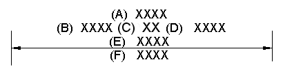
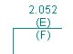
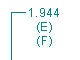

Dimension Prefix dialog box
Use the options in the Dimension Prefix dialog box to add prefix, suffix, superfix, and subfix text to a dimension value you are placing or editing.
This illustration identifies the different types of dimension text and shows the relative position of each.

|
(A) |
Superfix |
|
(B) |
Prefix |
|
(C) |
Value |
|
(D) |
Suffix |
|
(E) |
Subfix |
|
(F) |
Subfix 2 |
- Saved settings
-
Specifies the name for a new saved setting. Selecting the arrow lists the previously saved setting names.
- Save
-
Saves the information in the Superfix, Prefix, Suffix, Subfix, Subfix 2, and Subfix horizontal alignment boxes to the name displayed in the Saved settings box.
- Delete
-
Deletes the saved setting information associated with the name currently displayed in the Saved settings box.
- Symbols and Values
-
Opens the Select Symbols and Values dialog box for you to generate the appropriate symbols and model-derived values without having to type the property text codes yourself. Examples of the types of symbols you can select include ± (plus minus), ° (degree), and ∅ (diameter). Examples of model-derived values include hole references, bend data, and weld beads.
- Format
-
Modifies the format of the property text string output value at the cursor position in the Prefix, Suffix, Superfix, Subfix, and Subfix 2 boxes.
Displays the Format Values dialog box for you to choose the formatting. You can apply formatting to each valid property text string. The type of formatting you can apply depends on your cursor position when you select the Format button.
For more information, see the help topic, Format property text values.
- Special characters
-
Adds a special font character to the dimension. You can use the buttons to apply special font characters such as diameter, counterbore, and depth to the active box. The Carriage Return button is the last button in this array:
- Hole reference
-
Adds a hole reference, such as counterbore depth or counterbore size, to the dimension or callout text. Hole references are associative to the part feature they refer to and will update if the hole characteristics of the feature are modified.
- Smart hole depth
-
References the hole depth data from the Smart Depth tab of the Modify Dimension Style dialog box.
- Smart thread depth
-
References the thread depth data from the Smart Depth tab of the Modify Dimension Style dialog box.
- Tolerance zone
-
Adds a tolerance zone symbol to the dimension text. The tolerance zone symbols are Projected, Tangent Plane, Free State, Envelope Requirement, and Profile Unequally Disposed.
- Prefix
-
Specifies prefix information.
- Suffix
-
Specifies suffix information.
- Superfix
-
Specifies superfix information.
- Subfix
-
Specifies subfix information. You can place multiple lines of subfix text by pressing the Shift+Enter keys at the end of each line, or by clicking the Carriage Return button located at the end of Special Characters.
- Subfix 2
-
You can place multiple lines of subfix 2 text by pressing the Shift+Enter keys at the end of each line, or by clicking the Carriage Return button located at the end of Special Characters.
-
Example:
If the dimension value is above the dimension line, then the subfix text (E) displays above the dimension line and the subfix 2 text (F) displays below the dimension line.

-
Example:
If the dimension value is embedded in the dimension line, then the subfix 2 text (F) displays directly below both the value and the subfix text (E).

-
- Subfix horizontal alignment
-
Specifies the horizontal alignment of the Subfix and Subfix 2 text.
Options include Left, Center, and Right justification.
- Apply
-
Applies dimension text changes to a selected dimension.
- OK
-
Saves the changes to the dimension text and closes the dialog box.
If you are adding dimensions, then the dimension text will be applied to the next dimension placed on the drawing.
Note:-
You can use the Enable Prefix button
 on the Dimension command bar to show and hide the dimension prefix on the dimension.
on the Dimension command bar to show and hide the dimension prefix on the dimension. -
Both the OK and the Apply buttons in this dialog box activate the Enable Prefix button.
-
- Clear
-
Clears all dimension text fields.
- Cancel
-
Discards the current changes to the dimension text and closes the dialog box. When you open the dialog box again, it displays the last-applied or last-saved information.